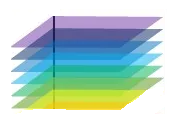

Trainable Combiners#
To begin, we start with two classes to understand the mean and covariance of their errors. We treat each as a two-dimensional feature generated for each sample error, so we have n samples of two-dimensional errors.
TABLE 5.1 Hypothetical Output for \( \omega_1 \) from Two Classifiers for a Data Set \( Z = \{z_1, \dots, z_{10}\} \).
Data Point |
\( z_1 \) |
\( z_2 \) |
\( z_3 \) |
\( z_4 \) |
\( z_5 \) |
\( z_6 \) |
\( z_7 \) |
\( z_8 \) |
\( z_9 \) |
\( z_{10} \) |
|---|---|---|---|---|---|---|---|---|---|---|
\( d_{1,1}(z_k) \) |
0.71 |
0.41 |
0.76 |
0.27 |
0.15 |
0.91 |
0.09 |
0.15 |
0.15 |
0.64 |
\( d_{2,1}(z_k) \) |
0.62 |
0.90 |
0.98 |
0.68 |
0.56 |
0.95 |
0.44 |
0.22 |
0.79 |
0.14 |
Target (\( \omega_1 \)) |
1 |
1 |
1 |
0 |
0 |
0 |
0 |
0 |
0 |
0 |
The approximation error of \( D_1 \) has the following 10 values:
The mean of the error of \(D_1\) is \(0.225\), and the variance of the error of \(D_1\) is calculated as follows:
The covariance matrix of the approximation errors of the two classifiers is:
What means the \( \Sigma \)-Norm#
Minimizing the \( \Sigma \)-norm of the weights in a classifier ensemble is a strategic approach to achieve an optimal combination of classifiers that takes into account the dependencies between their errors with more emphasis over robust clasifier.
Understanding the Problem#
In an ensemble of classifiers, the final decision is typically made by a weighted combination of the outputs of individual classifiers. Let:
\( w = [w_1, w_2, \dots, w_L]^T \) represent the weights assigned to each of L-classifier.
\( \Sigma \) be the covariance matrix of the errors made by the individual classifiers.
The goal is to find the optimal set of weights \( w \) that combine the classifiers for finding support for each column of \( DP(x) \).
The Role of the \( \Sigma \)-Norm#
The \( \Sigma \)-norm \( \|w\|_\Sigma \) is defined as:
This expression represents a weighted combination of the variances and covariances of the classifier errors, which can be interpreted as a measure of the overall uncertainty or risk associated with the combined classifier decision.
Solving the Problem#
After obtaining \(\Sigma\) of error, for applying to each column of DP, we want to minimize the \( \Sigma \)-norm \( \|w\|_\Sigma \), defined as:
subject to the constraint:
Optimization Problem#
The problem can be formulated as the following constrained optimization:
Lagrangian Formulation#
Introduce a Lagrange multiplier \( \lambda \) for the equality constraint:
Solve for \( w \) and \( \lambda \)#
Simplify the Objective Function#
Since \( \|w\|_\Sigma = \sqrt{w^T \Sigma w} \), minimize \( w^T \Sigma w \) instead to simplify the calculations.
The problem becomes:
Set Up the Lagrangian#
Take Derivatives#
To find the minimum, take the derivative of the Lagrangian with respect to \( w \) and \( \lambda \) and set them to zero:
Solve for \( w \)#
From the first derivative equation:
Using the constraint \( \sum_{i=1}^{M} w_i = 1 \):
Substitute \( \lambda \) back into the expression for \( w \):
Solution#
The optimal weights \( w \) that minimize the \( \Sigma \)-norm under the constraint that their sum equals one are given by:
Interpretation#
\( \Sigma^{-1} \) is the inverse of the covariance matrix of errors.
The resulting weights \( w^* \) adjust according to the error covariance structure, minimizing the \( \Sigma \)-norm and effectively combining the classifiers while considering their error dependencies.
Sopecial case: If the covariance matrix \( \Sigma \) is diagonal#
where \( \sigma_i^2 \) is the variance associated with the \(i\)-th classifier.
Compute \( \Sigma^{-1} \)#
For a diagonal matrix \( \Sigma \), the inverse \( \Sigma^{-1} \) is also a diagonal matrix with entries being the reciprocals of the diagonal entries of \( \Sigma \):
Compute \( \mathbf{1}^T \Sigma^{-1} \mathbf{1} \)#
Here, \( \mathbf{1} \) is a vector of ones:
To compute \( \mathbf{1}^T \Sigma^{-1} \mathbf{1} \), you first calculate \( \Sigma^{-1} \mathbf{1} \):
Thus:
Compute \( w^* \)#
Given:
Substitute \( \Sigma^{-1} \mathbf{1} \) and \( \mathbf{1}^T \Sigma^{-1} \mathbf{1} \):
So:
Result#
The optimal weights \( w^* \) are given by:
where \( w_i^* \) is the weight assigned to the \( i \)-th classifier. This result reflects that classifiers with smaller variances (i.e., more reliable classifiers) are assigned higher weights in the ensemble.
Combined Entropy orness and \( \Sigma \)-norm#
To solve the optimization problem using gradient descent, follow these steps:
Problem Restatement#
You need to minimize the function:
subject to:
Here, \( w \) is the vector of weights, \( \Sigma \) is a diagonal covariance matrix, and \( \nu \) is a Lagrange multiplier associated with the entropy term.
Gradient Descent Solution#
Define the Objective Function
The objective function to minimize is:
Compute the Gradient
Calculate the gradient of \( \mathcal{L} \) with respect to \( w_i \):
where \( (\Sigma w)_i \) is the \(i\)-th component of the vector \( \Sigma w \).
Gradient Descent Update Rule
The gradient descent update rule for \( w_i \) is:
where \( \alpha \) is the learning rate.
Substitute the gradient:
Apply the Constraint
To enforce the constraint \( \sum_{i=1}^{L} w_i = 1 \), use a projection step:
After each update, normalize the weights to ensure they sum to 1:
Iterate
Repeat the update and normalization steps until convergence:
Compute the Gradient: Calculate the gradient for each weight.
Update Weights: Apply the gradient descent update rule.
Normalize Weights: Ensure weights sum to 1.
Combined Gini-index orness and Diagonal \( \Sigma \)-norm#
Problem Restatement#
You want to minimize:
subject to:
where \( \Sigma \) is a diagonal matrix with diagonal elements \( \sigma_{ii}^2 \).
Lagrangian Function#
Define the Lagrangian function including the constraint:
Gradient Calculation#
Compute the Gradient
The diagonal covariance matrix \( \Sigma \) means that \( \Sigma \) is a diagonal matrix with elements \( \sigma_{ii}^2 \). The matrix-vector multiplication \( w^T \Sigma w \) simplifies to:
The Lagrangian function simplifies to:
Take the partial derivative of \( \mathcal{L} \) with respect to \( w_i \):
Set the gradient to zero:
Rearrange to solve for \( w_i \):
Apply the Constraint
To ensure the constraint \( \sum_{i=1}^{L} w_i = 1 \) is satisfied:
Simplify:
Solve for \( \lambda \):
Substitute \( \lambda \) Back#
Substitute \( \lambda \) back into the expression for \( w_i \):
Final Solution#
Thus, the optimal weight for each \( w_i \) is:
Again weight of \(i^\text{th}\)-classifier proportional of normalized inverse of variance.
Decision Templates#
Decision Template \( DT_j \)#

Definition:
Decision Profile \( DP(x_i) \): For each sample \( x_i \) belonging to class \( \omega_j \), \( DP(x_i) \) is an \( L \times C \) matrix where \( L \) is the number of classifiers, and \( C \) is the number of classes. Each entry \( DP_{i,c}(x_i) \) in this matrix represents the decision score or probability assigned by the \( i \)-th classifier to the \( c \)-th class for the sample \( x_i \).
Decision Template \( DT_j \): The decision template \( DT_j \) is a consolidated \( L \times C \) matrix that summarizes the decision profiles of all samples in class \( \omega_j \).
Aggregation:
Set of Decision Profiles: For class \( \omega_j \), you have \( k_j \) samples. Each sample \( x_i \) in \( \omega_j \) provides a decision profile \( DP(x_i) \), which is an \( L \times C \) matrix. Therefore, \( DT_j \) involves aggregating these \( k_j \) matrices.
Mean Operator: To compute \( DT_j \), apply the mean operator to aggregate the decision profiles across all samples in class \( \omega_j \). Specifically, if \( DP(x_i) \) is the decision profile matrix for sample \( x_i \), the decision template \( DT_j \) is computed as:
where \( k_j \) is the number of samples in class \( \omega_j \).
Example Calculation#
Assume you have 3 classifiers and 4 classes. For class \( \omega_j \), consider the following decision profiles for 3 samples:
Decision Profile for Sample 1: $\( DP(x_1) = \begin{bmatrix} 0.2 & 0.5 & 0.2 & 0.1 \\ 0.3 & 0.4 & 0.1 & 0.2 \\ 0.1 & 0.3 & 0.4 & 0.2 \end{bmatrix} \)$
Decision Profile for Sample 2: $\( DP(x_2) = \begin{bmatrix} 0.3 & 0.4 & 0.1 & 0.2 \\ 0.2 & 0.5 & 0.2 & 0.1 \\ 0.2 & 0.3 & 0.4 & 0.1 \end{bmatrix} \)$
Decision Profile for Sample 3: $\( DP(x_3) = \begin{bmatrix} 0.1 & 0.3 & 0.4 & 0.2 \\ 0.4 & 0.3 & 0.2 & 0.1 \\ 0.3 & 0.2 & 0.4 & 0.1 \end{bmatrix} \)$
Compute Decision Template \( DT_j \): $\( DT_j = \frac{1}{3} \left( DP(x_1) + DP(x_2) + DP(x_3) \right) \)\( \)\( DT_j = \frac{1}{3} \begin{bmatrix} 0.2+0.3+0.1 & 0.5+0.4+0.3 & 0.2+0.1+0.4 & 0.1+0.2+0.2 \\ 0.3+0.2+0.4 & 0.4+0.5+0.3 & 0.1+0.2+0.4 & 0.2+0.1+0.1 \\ 0.1+0.2+0.3 & 0.3+0.3+0.2 & 0.4+0.4+0.4 & 0.2+0.1+0.1 \end{bmatrix} \)\( \)\( DT_j = \frac{1}{3} \begin{bmatrix} 0.6 & 1.2 & 0.7 & 0.5 \\ 0.9 & 1.2 & 0.7 & 0.4 \\ 0.6 & 0.8 & 1.2 & 0.4 \end{bmatrix} \)\( \)\( DT_j = \begin{bmatrix} 0.2 & 0.4 & 0.233 & 0.167 \\ 0.3 & 0.4 & 0.233 & 0.133 \\ 0.2 & 0.267 & 0.4 & 0.133 \end{bmatrix} \)$
Decision Template as a Normal Distribution#
Decision Profiles Set: Let \( S_{DP_j} \) be the set of decision profiles for all samples in class \( \omega_j \): $\( S_{DP_j} = \{ DP(x_k) \mid x_k \in \omega_j \} \)\( where each \) DP(x_k) \( is an \) L \times C $ matrix.
Mean Decision Profile: Compute the mean decision profile matrix \( \mu_j \), which is the average of all decision profiles in \( S_{DP_j} \): $\( \mu_j = \frac{1}{k_j} \sum_{k=1}^{k_j} DP(x_k) \)\( Here, \) \mu_j \( is an \) L \times C \( matrix representing the mean decision profile for class \) \omega_j $.
Covariance Matrix: Compute the covariance matrix \( \Sigma_j \) for the decision profiles in \( S_{DP_j} \).
Mean matrix: $\( \bar{\textbf{DP}}_j = \frac{1}{k_j} \sum_{k=1}^{k_j} \textbf{DP}_k \)$
Covariance Matrix:
Normal Distribution Representation#
Given the mean matrix \( \mu_j \) and covariance matrix \( \Sigma_j \), we can represent the decision template \( DT_j \) as a multivariate normal distribution: $\( DT_j \sim \mathcal{N}(\mu_j, \Sigma_j) \)$
Where:
\( \mu_j \) is the \( L \times C \) mean decision profile matrix.
\( \Sigma_j \) is the \( L \times L \) covariance matrix.
Trainin and operation using Decision Templates#
Training#
Constructing Decision Templates:
For each class \( \omega_j \) (where \( j = 1, \ldots, C \)), we need to compute the decision template \( DT_j \). This involves the following steps:
Collect Decision Profiles: For each sample \( z_k \) in class \( \omega_j \), obtain its decision profile matrix \( DP(z_k) \). The decision profile \( DP(z_k) \) is an \( L \times C \) matrix, where \( L \) is the number of classifiers and \( C \) is the number of classes.
Calculate the Mean Decision Profile: Compute the mean decision profile \( DT_j \) for class \( \omega_j \) as follows: $\( DT_j = \frac{1}{N_j} \sum_{z_k \in \omega_j} DP(z_k) \)$ Here:
\( N_j \) is the number of samples in class \( \omega_j \).
\( DP(z_k) \) is the decision profile matrix of sample \( z_k \).
\( DT_j \) is the \( L \times C \) mean matrix representing the average decision profile for class \( \omega_j \).
Operation#
Classifying New Samples:
Given a new input sample \( x \in \mathbb{R}^n \), we want to classify it using the decision templates.
Construct Decision Profile: Compute the decision profile \( DP(x) \) for the input sample \( x \). This is an \( L \times C \) matrix where each entry represents the classifier’s decision for each class.
Calculate Similarity: Measure the similarity between the decision profile \( DP(x) \) and each decision template \( DT_j \). Various similarity measures can be used, such as Euclidean distance, cosine similarity, etc. Let \( S(DP(x), DT_j) \) denote the similarity between \( DP(x) \) and \( DT_j \).
Compute Membership Scores: For each class \( j \), compute the membership score \( m_j(x) \) as:
Here, \( m_j(x) \) (support of class \(\omega_j\) ) represents how similar the decision profile of \( x \) is to the decision template of class \( \omega_j \).
Class Decision: Assign the class label \( \omega_j \) to the input sample \( x \) based on the highest membership score:
Miniproject: Ensemble Diversity#
Ensemble Diversity refers to the differences among the individual models or learners in an ensemble. The idea is that for an ensemble method to improve performance over any single learner, the individual models in the ensemble must exhibit diversity. If all the models in the ensemble make the same predictions, combining them will not yield any performance improvement over using a single model.
Complete this chapter with code and analytical notes